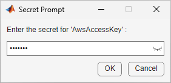

Keep Sensitive Information Out of Code
Sensitive information in MATLAB® code is any information that provides access to your workflow. Examples of sensitive information include passwords, certificates, credentials, OAuth tokens, and other configuration data for:
SFTP and FTP servers
Password-protected files, such as PDFs
Password-protected archives, such as ZIP files
Cloud providers, such as Amazon S3™ and Windows Azure® Blob Storage
API keys, SSH keys, and encryption keys
Databases and applications
Keeping sensitive information out of code, rather than hard coding, allows you to increase the security of your workflow as well as make your code safer to share. While your ideal security system is dependent on your overall workflow and environment, keeping sensitive information out of code is a recommended practice.
Two ways to keep sensitive information out of code are to save it in your MATLAB vault or to save it in a .env file.
To store your sensitive information in a location that is accessible only through MATLAB using the exact combination of your local machine and operating system account, you can save your information as encrypted secrets in your MATLAB vault.
To store your sensitive information in a location that is easy to move and share, for which you can manage access, you can save your information as key-value pairs of environment variable names and their values in a
.envfile.
Store Sensitive Information in Your MATLAB Vault
Your MATLAB vault and secrets, which do not leave your local machine, persist across MATLAB sessions. Each secret consists of a name, value, and optional metadata.
Secret name – A unique case-sensitive text identifier for the secret. The secret name is stored unencrypted in your vault as a string scalar.
Secret value – A text value associated with the secret. The Secret Prompt dialog box, where you enter the secret value, supports copy-paste functionality. When you save a secret value, it is stored encrypted in your vault using industry standard AES-256 encryption. The secret value is returned as a string scalar.
Secret metadata – A dictionary containing additional information associated with the secret. The optional secret metadata is stored unencrypted in your vault.
Create and manage your secrets in your vault using these functions:
setSecret– Save sensitive information as a secret in your vault.getSecret– Retrieve a secret from your vault.isSecret– Determine if a secret exists in your vault.removeSecret– Remove a secret from your vault.setSecretMetadata– Set the metadata of a secret in your vault.getSecretMetadata– Retrieve the metadata of a secret in your vault.listSecrets– Display the names and metadata of all the secrets in your vault.
Store Credentials for Remote Data Access as Secrets in Your MATLAB Vault
A common workflow is to pull data from remote locations like Amazon S3. To learn more about how to set up access to remote data locations, see Work with Remote Data.
Part of the remote data workflow is to save your credentials as environment variables.
To increase the security of your code and make your code safer to share, you can store
your credentials in your MATLAB vault as secrets and then reference them in your code. To add secret values
to your vault, use setSecret with a secret name to initiate the Secret
Prompt dialog box.
setSecret("AwsAccessKey")
View the secrets in your vault using listSecrets.
listSecrets
SecretName SecretMetadata
______________ _______________________________________________
"AwsAccessKey" {[dictionary (string ⟼ cell) with no entries]}With your access key value stored as a secret, you can access your remote data without
including your access key in your code. Set your access key value as an environment
variable with setenv while referencing your secret
value with getSecret. Then, read your remote data.
setenv("AWS_ACCESS_KEY",getSecret("AwsAccessKey")); t = readtable("s3://bucketname/exampleFolder/ExampleFile");
To help organize your workflow, you can add metadata to your secret with
setSecretMetadata. View the metadata of a secret with
getSecretMetadata.
m = dictionary(["Description","TeamMembers", ... "CreationDate"], ... [{"This is an example of metadata"}, ... {"Maria Silva, Akane Saito"}, ... {datetime("now")}]); setSecretMetadata("AwsAccessKey",m); getSecretMetadata("AwsAccessKey")
dictionary (string ⟼ cell) with 3 entries:
"CreationDate" ⟼ {[13-Dec-2023 18:08:14]}
"Description" ⟼ {["This is an example of metadata"]}
"TeamMembers" ⟼ {["Maria Silva, Akane Saito"]}You can remove a secret from your vault with removeSecret. This
action is irreversible.
removeSecret("AwsAccessKey");Store Sensitive Environment Variables in a .env File
To store your sensitive information in a location that is easy to move and share, for
which you can manage access, you can save your information as key-value pairs of environment
variable names and their values in a .env file. Using a
.env file works well for users who want to share their sensitive
information with their team by keeping their .env file in a shared
location. You can also use different .env files for different workflows.
You can access the environment variables in your .env file using the
loadenv
function.
The loadenv function loads all environment variables from a
.env file, or a similarly structured plain text file, by parsing one
key-value pair per line and setting them as environment variables in the MATLAB environment. Because .env files are plain text files, make
sure that the location and permissions of your .env file reflect the
security level of your workflow:
Your local machine is often the most secure place to store your file.
During code deployment, do not deploy a
.envfile containing your credentials.Do not check your
.envfiles into source code repositories. For example, in a Git repository, include the.envfile extension in your.gitignore_globalfile to exclude.envfiles from all your repositories. For more information on how to configure Git to ignore files, see the GitHub page Ignoring Files.
Store Remote Data Access Credentials as Environment Variables in .env File
To increase the security of a remote data workflow, you can store your credentials in
a .env file. For example, create a .env file
containing your Amazon S3 credentials as key-value pairs.
keyvalues=["AWS_ACCESS_KEY_ID='YOUR_AWS_ACCESS_KEY_ID'"; ... "AWS_SECRET_ACCESS_KEY='YOUR_AWS_SECRET_ACCESS_KEY'"]; writelines(keyvalues,"C:\Users\username\Desktop\s3credentials.env");
Load the contents of your .env file as environment variables using
loadenv. Then, read your remote data. With your credentials in a
.env file, you can access your remote data without including your
credentials in your code.
loadenv("C:\Users\username\Desktop\s3credentials.env"); t = readtable("s3://bucketname/exampleFolder/ExampleFile");
See Also
loadenv | setenv | setSecret | getSecret | isSecret | listSecrets | removeSecret | setSecretMetadata | getSecretMetadata